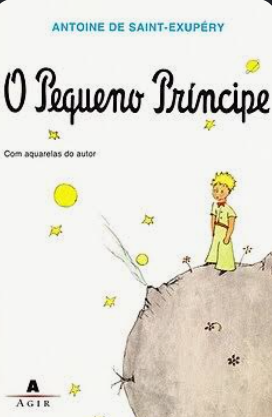
É um dos livros favoritos de muita gente, pois ele é apresentado no ensino fundamental para as crianças. Ele é reflexivo e possui várias frases marcantes
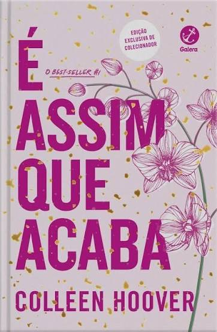
Esse livro fala principalmente sobre uma mulher que apanha do namorado. O livro faz você compreender a personagem principal e mostra como é dificil para a vitima sair do relacionamento abusivo.
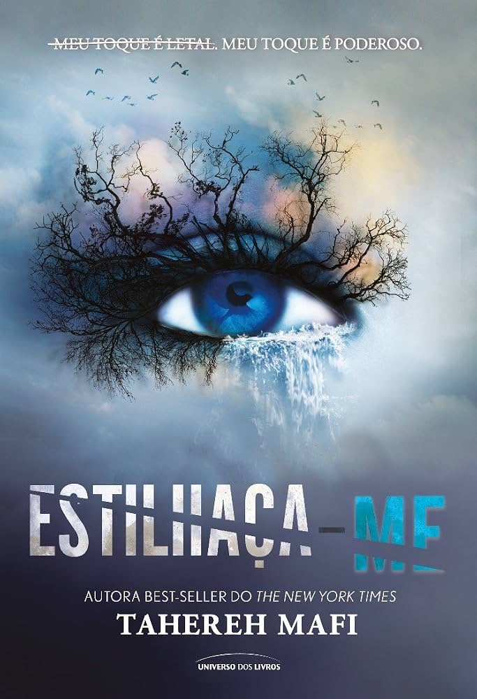
A Juliete vive em uma sociedade em que o governo oprime os mais pobres, idosos, quem tenta ir contra ao sistema. Não fica explicito no livro, mas praticamente fala de uma sociedade vivendo uma ditadura.
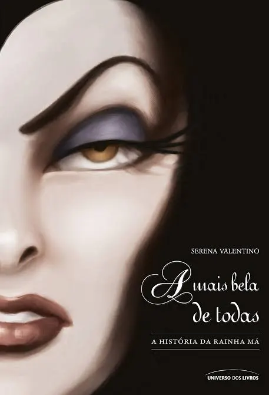
Fala sobre a história da Rainha Má (vilã de branca de neve). O livro mostra o passado da Rainha e que na verdade ela tinha muitos problemas com a sua autoestima. O livro mostra como a vaidade pode acabar com as pessoas
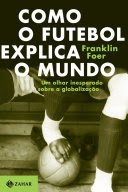
O jornalista Franklin Foer analisa como as rivalidades nos gramados mundiais e as Copas se conectam de forma direta com a globalização, tensões religiosas, nacionalismo e a política internacional.
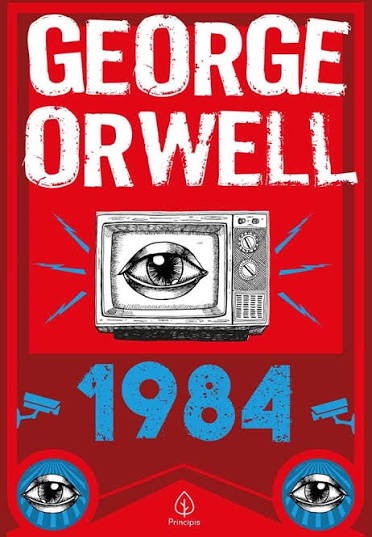
O mundo vive em guerra perpétua sob o controle do "Partido", liderado pela figura onipresente do Grande Irmão.
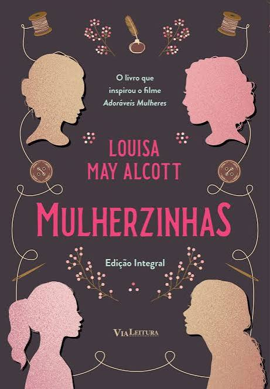
esconde uma crítica revolucionária contra os papéis de gênero tradicionais e a dependência financeira feminina no século XIX. Você não precisa de dezenas de pretendentes. Você precisa apenas de um... se ele for o certo."
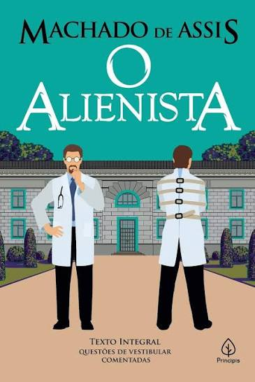
usa a trajetória da protagonista para pautar debates profundos sobre identidade, sexualidade, o preço da fama e o papel da mulher na sociedade.
Viram-no passar, ora pensativo, ora sorrindo, mas sempre firme, como um homem que sabe para onde vai.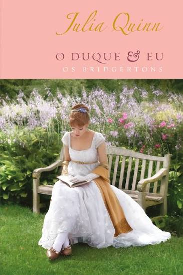
É um romance que conta história de um duque rejeitado pelo pai desde o nascimento. O livro mostra que o Simon(duque) ainda deixa o ódio pelo pai dele influenciarem nas decisões da sua vida mesmo após a morte do pai
Ele passou a minha vida inteira fingindo que eu não existia. Agora, farei com que o nome dele deixe de existir para sempre.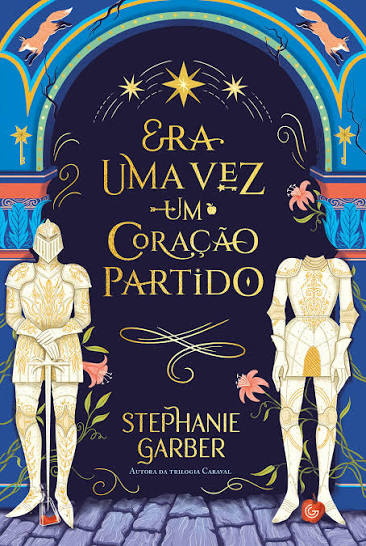
É um romance onde a personagem principal mostra ser uma personagem humana, vulnerável, sofrendo com perigos iminentes durante todo o livro. O livro possui varios personagens, o que deixa vários contrastes de personalidade.
Todas as histórias são feitas tanto de verdades quanto de mentiras, O que importa é a maneira como acreditamos nelas.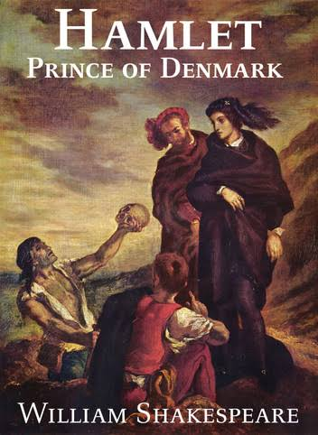
Enquanto outros personagens da literatura agem por impulso, Hamlet reflete profundamente sobre as consequências de seus atos, a vida, a morte e a moralidade
Mesmo que me trancassem em uma casca de noz, eu me consideraria rei de um espaço infinito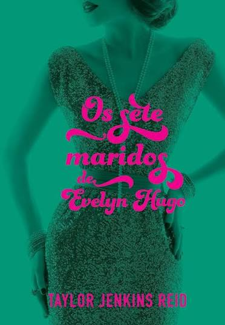
usa a trajetória da protagonista para pautar debates profundos sobre identidade, sexualidade, o preço da fama e o papel da mulher na sociedade.
O mundo não dá nada de graça para ninguém, você tem que tirar o que quer.